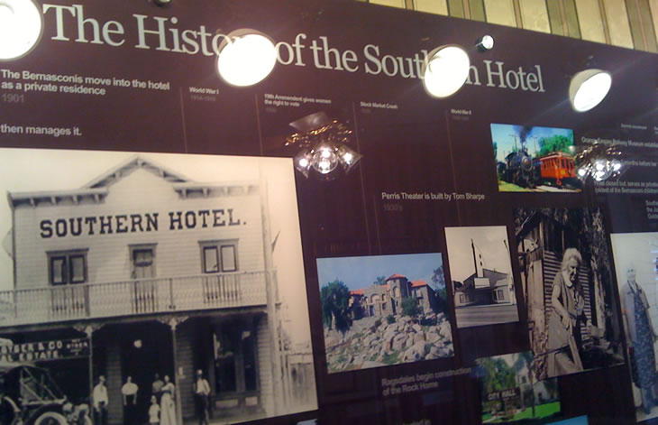

Timeline
- 1850 California admitted as the 31st State in the Union
- 1859 Bernardo comes to California at the age of 20 by windjammer around Cape Horn
- 1861-1865 Civil War
- 1876 Alexander Graham Bell invents the telephone
- 1877 Marcellina Bernasconi immigrates to America at the age of 20
- 1879 Bernardo purchases 284 acres
- 1880 First claims of gold found in Good Hope mine
- 1883 Bernardo and Marcellina are married
- 1886 Southern Hotel is built by Mr. Bernasconi and leased to the Bevier Family
- 1886 San Jacinto Stage stops daily
- 1886 Perris town site is established
- 1887 Six passenger and two freight trains stop in Perris daily
- 1889 Bevier's lease is up. Mrs. Bernasconi then manages it.
- 1890-1892 Additions to the hotel are made
- 1893 Riverside County is formed
- 1901 The Bernasconis move into the hotel as a private residence
- 1901 Perris Progress newspaper is established
- 1910 Alfalfa becomes a major crop in Perris
- 1911 Perris becomes an incorporated city
- 1914-1918 World War I
- 1920 Population of Perris is 499
- 1920 19th Amendment gives women the right to vote
- 1923 Bernardo dies and is buried in the Perris cemetery
- 1927 Perris Valley Cemetery (first located at the intersection of Redlands and 7th St) is moved to Perris Boulevard
- 1928 Ragsdales begin construction of the Rock Home
- 1930 Population of Perris is 763
- 1932 Perris High Administration building (now Perris City Hall) built
- 1939-1945 World War II
- 1940 Population of Perris is 1011
- 1950 Population of Perris is 1807
- 1956 Orange Empire Railway Museum established
- 1957 Marcellina dies 3 months before her 100th birthday
- 1957 Hotel closed but serves as private residence for Matilda (oldest of the Bernasconi children) until her death in 1982
- 1960 Population of Perris is 2950
- 1963 Kennedy assassinated
- 1965 Southern Hotel dedicated as a California landmark by the Jurupa Chapter of the Native Daughters of the Golden West
- 1969 Man lands on the moon
- 1970 Population of Perris is 4228
- 1974 Nixon resigns after Watergate
- 1980 Population of Perris is 6827
- 1982 Matilda dies at 97, Hotel now abandoned
- 1984 Hotel declared an eyesore and a public nuisance
- 1987 Two back to back fires nearly destroy the Southern Hotel
- 1989 Berlin Wall dismantled
- 1990 Population of Perris is 21460
- 1990 Hotel completely restored by Leon E. and John D. Motte
- 1993 Southern Hotel is dedicated to National Registrar of Historical Places
- 2000 Population of Perris is 36189
- 2001 9/11 terror attack